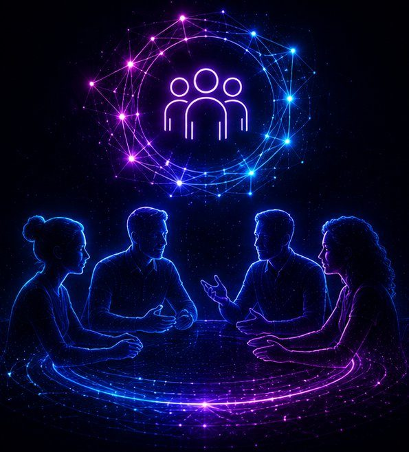
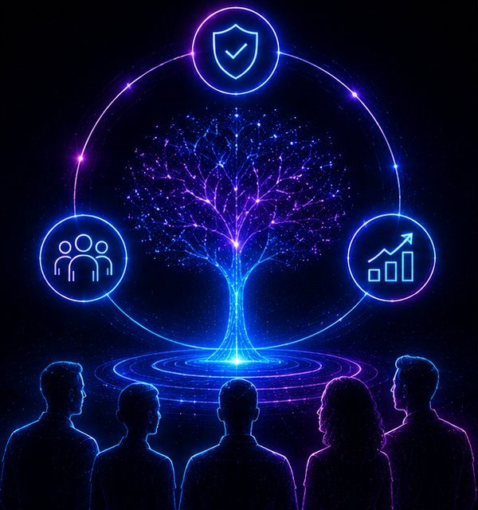

Solutions
Three ways we bring awareness into AI
Each engagement starts with your real challenges and ends with practices your team actually keeps using.
Culture Development for AI Teams
Create healthy, high-performing AI organizations where speed doesn’t cost trust.
Learn more 02Conscious AI Adoption
For organizations implementing AI who want it to land, technically and humanly.
Learn more 03Leadership Coaching
For founders and leaders navigating high-stakes decisions at speed.
Learn moreHow we work
Assess → Align → Act
Assess
We start by understanding where you really are. Through conversations, observation, and the right questions, we map your current dynamics and surface what’s actually driving misalignment, friction, or risk, so we solve the real problem, not just the obvious one.
Align
Next we build shared clarity. Together we agree on the priorities, roles, and decisions that matter most, so everyone is pulling in the same direction, and the path forward is something the whole team owns rather than something handed down.
Act
Finally we put it into practice. We embed the rituals, frameworks, and shared language that turn new clarity into everyday habits, so the change sticks long after we leave, and your team keeps improving on its own.

Solution 01
Culture Development for AI Teams
When a team is moving fast on AI, culture is what keeps speed from costing trust. We work directly with your people to build the psychological safety, communication habits, and shared language a group needs to make hard calls quickly, without burning out or quietly fracturing along the way.
Outcome: better collaboration, faster execution, and decisions the whole team can stand behind.

Solution 02
Conscious AI Adoption
Adopting AI is rarely a purely technical problem: it lands, or stalls, on people. We help organisations roll out AI so it actually sticks: a clear strategy, sensible governance, and the stakeholder alignment that turns a promising tool into a practice your teams genuinely use.
Outcome: successful AI adoption, with your people on board rather than left behind.
Solution 03
Leadership Coaching
Founders and leaders set the tone for everything around them, especially under pressure. In one-to-one coaching we work on the decisions, presence, and self-awareness that let you lead clearly when the stakes are high, the information is incomplete, and everyone is looking to you.
Outcome: clearer leaders who make better decisions under pressure.
Let’s talk
Ready to build awareness into your organization?
A 30-minute discovery call to understand where you are and what would help most.